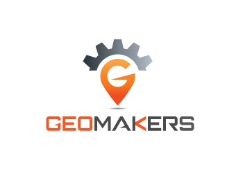

GeoBadges is an open educational resource that helps teachers use mapping and mapstorytelling activities to drive student learning. It is convened by the American Geographical Society and sustained by a community of partners.
Totally new to maps? Here's a 101.
Looking for tools to use? Check out these snapshots.
Looking for lessons? Explore our pathways and earn open badges.
Featured Tool Snapshots

MapStory
MapStory is the global data commons for mapping geographic change over time.
OpenStreetMap
OpenStreetMap is the free and editable base map of the world.
StoryMapJS
StoryMapJS is a tool for creating and animating push-pin maps as dynamic slide presentations.Featured Lesson Pathways
Dummy 1
This pathway helps us do things that are cool.Dummy 2
This pathway helps us do things that are cool.Dummy 3
This pathway helps us do things that are cool.Partners & Sponsors



Contact
Twitter // Facebook
Sponsor